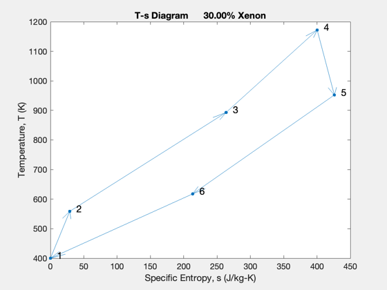
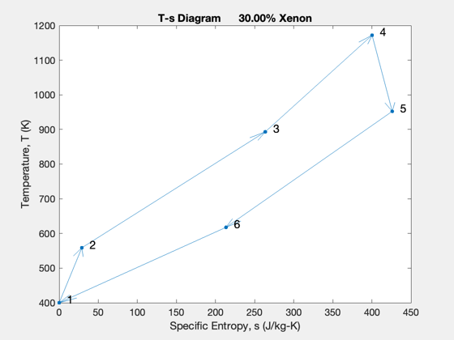

Contents
Brayton Cycle
Looks at different cycles. Need to pick He/Xe mix Provides gamma, molecular weight and cP
% Two choices of he/xe % From a turbomachinery perspective %-------------------------------------------------------------------------- %-------------------------------------------------------------------------- % Copyright (c) 2023 Princeton Satellite Systems, Inc. % All rights reserved. %-------------------------------------------------------------------------- % Since 2023.1 %-------------------------------------------------------------------------- % Heat transfer parameters r = 0.1; h = 0.02; a = h*h; n = 2*pi*r/h; p = 2; t = 1172; pR = 2; nC = 0.8; nT = 0.82; % Cycle design fXenon= 0.5; CycleDesign(fXenon,7,400,t,p,a,r,n,pR,nC,nT) set(gcf,'Name',sprintf('Brayton Cycle %10.2f%% Xenon',fXenon*100));

Lower Xenon fraction
fXenon = 0.3;
[dOut,dP] = CycleDesign(fXenon, 7,400,t,p,a,r,n,pR,nC,nT);
CycleDesign(fXenon,7,400,t,p,a,r,n,pR,nC,nT)
k = 1;
s{k,1} = 'Recuperator effectiveness'; s{k,2} = sprintf('%12.2f',dOut.nr); k = k + 1;
s{k,1} = 'Compressor efficiency'; s{k,2} = sprintf('%12.2f',dOut.nc); k = k + 1;
s{k,1} = 'Turbine efficiency'; s{k,2} = sprintf('%12.2f',dOut.nt); k = k + 1;
s{k,1} = 'Exchanger pressure drop'; s{k,2} = sprintf('%12.2f',dOut.nPX); k = k + 1;
s{k,1} = 'Molecular weight'; s{k,2} = sprintf('%12.3f (kg/mole)',dOut.molWt); k = k + 1;
s{k,1} = 'Specific heat'; s{k,2} = sprintf('%12.1f (J/kg-deg-K)',dOut.cP); k = k + 1;
s{k,1} = 'Gamma'; s{k,2} = sprintf('%12.1f ',dOut.gamma); k = k + 1;
CreateLatexTable(s,'CycleParameters');
DisplayLatexTable(s)
%--------------------------------------
% $Date$
% $Id: 33155876e17dff828eb021b1b523a4e627b94c96 $
Recuperator effectiveness 0.85 Fixed Variable
Compressor efficiency 0.80 Heat Rate O\&M O\&M
Turbine efficiency 0.82 Btu/kWh \$/kW-yr \$/MWh
Exchanger pressure drop 0.99 8800 42.10 4.60
Molecular weight 0.042 (kg/mole) 9750 70.00 7.10
Specific heat 495.7 (J/kg-deg-K) 10300 22.00 1.30
Gamma 1.7 8960 50.90 5.00
Pulverized Coal Conversion to 10 percent biomass 537 10360 50.90 5.00
Natural Gas Combined Cycle (NGCC) 978 6600 11.00 3.50
Advanced Natural Gas Combined Cycle (ANGCC) 1104 6300 10.00 2.00
Combustion Turbine (CT) 1101 10000 17.50 3.50
Advanced Combustion Turbine (ACT) 678 9800 6.80 10.70
Reciprocating Internal Combustion Engine (RICE) 1342 8500 6.90 5.85
Advanced Nuclear (AN) 5945 0 100.28 2.30
Biomass (BBFB) 4985 13500 110.00 4.20
Onshore Wind (WN) 1877 0 39.70 0.00
Photovoltaic Fixed 2671 0 23.40 0.00
Photovoltaic Tracking (20 MW) 2644 0 23.90 0.00
Photovoltaic Tracking (150 MW) 2534 0 21.80 0.00
Battery Storage (4 MW) 2813 0 40.00 0.00
 
